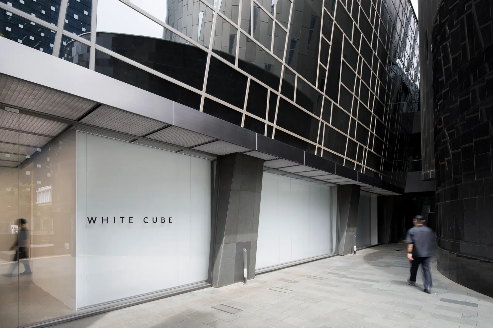

Seoul
46, Dosan-daero
45-gil
South Korea
+82 (0)2 6438 9093
Tues - Sat, 10am - 6pm

West Palm Beach
2512 Florida Avenue
West Palm Beach, 33401
United States
+1 561 317 7929
Tues - Sat, 11am - 6pm

London
25–26 Mason's Yard
London, SW1Y 6BU
United Kingdom
South Korea
+44 207 930 5373
Tues - Sat, 10am - 6pm

New York
1002 Madison Ave
New York, 10075
Suite 122
United States
+1 917 900 3063
By Appointment Only

Paris
10 Avenue Matignon
Paris, 75008
France
+33 (0) 1 87 39 85 97
By Appointment Only
Tues - Sat, 11am - 7pm

London
144–152 Bermondsey Street
London, SE1 3TQ
United Kingdom
+44 207 930 5373
Tues - Sat, 10am - 6pm
Sun, 12pm - 6pm